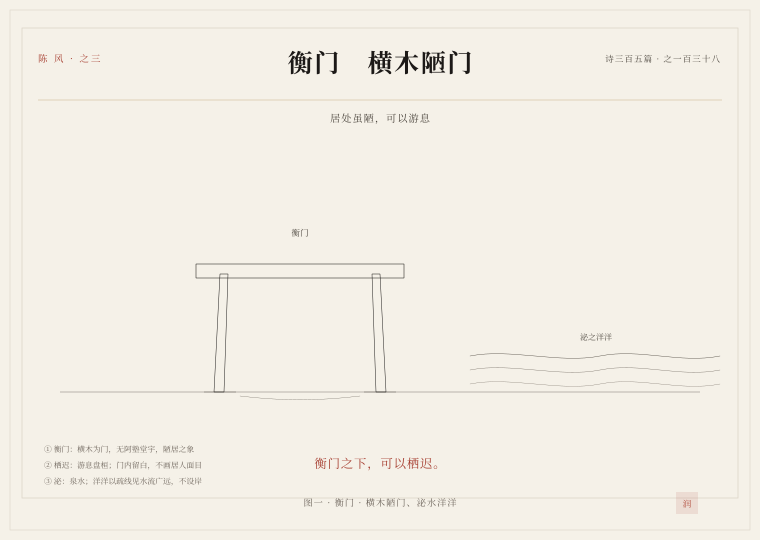
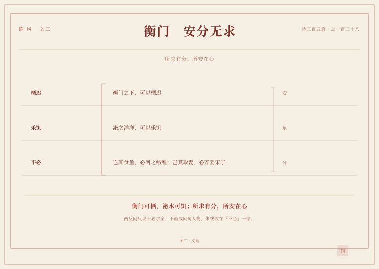

第一百三十八篇 衡门
陈风 · 之三 SJ138
朗读 · 普通话
依经文原文朗读，章次不读出；配古琴底乐，不改速、不加拖腔。全库同一音色（豆包 TTS），非播音员录制。
一 解题
诗三判：
- 谁在说：安贫自足、无求于世之人。横木为门之家，可以游息；泌水洋洋，可以乐饥；食鱼何必河鲂，娶妻何必齐姜、宋子。
- 说什么事：首章写居处之陋而可安，泌水之薄而可乐；次、三章两度反问，食鱼不必河中之鲂鲤，取妻不必齐姜宋子。所安者在分不在物，所足者在心不在势。
- 为何编在此：陈风前十篇多写歌舞荒淫、礼防弛坏；此篇居中，独作一首安贫守分的清声。陈地之诗多失之于放，此篇以「安分」立骨，是一编陈风中的收束处。
《毛序》：“《衡门》，诱僖公也。愿而无立志，故作是诗以诱掖其君也。”
朱子《诗集传》：“赋也。衡门，横木为门也。门之深者，有阿塾堂宇，此惟横木为之。栖迟，游息也。泌，泉水也。洋洋，水流貌。○此隐居自乐而无求者之词。言衡门虽浅陋，然亦可以游息；泌水虽不可饱，然亦可以玩乐而忘饥也。”
本库的看法：《衡门》是一首以安贫守分自况的诗。
毛序坐实「诱僖公、诱掖其君」，以为诗人勉其君立志；朱子只作「隐居自乐而无求者之词」，不专指僖公。本库从朱读，以陈地薄俗为背景，不把诗当成劝进之辞。
两反问只说「不必唯河鲂、齐姜是求」，是安分知足；不是自欺，不是酸腐，也不是愤激发牢骚。
断语：衡门可栖，泌水可饥；所求有分，所安在心。
先辨五事：「衡门」是横木为门的陋居，不是匾额上的「衡」字；「栖迟」是游息盘桓，不是栖身投宿；「乐饥」之乐，毛传读「疗」（疗饥），朱子读「乐而忘饥」，两读并存；「鲂」「鲤」是河鱼，不是泛指美味；「齐之姜」「宋之子」是齐宋两国之女，姜、子是姓，不是名。
二 经文
第一章
衡门之下，可以栖迟。
泌之洋洋，可以乐饥。
第二章
岂其食鱼，必河之鲂？
岂其取妻，必齐之姜？
第三章
岂其食鱼，必河之鲤？
岂其取妻，必宋之子？
分章：三章，章四句。
三 韵读
- 一章：迟、饥，脂部。
- 二章：鲂、姜，阳部。
- 三章：鲤、子，之部；朱子叶「子，奖里反」。
读法：一章脂部幽细，二章阳部开阔，三章之部收束；两反问同以「岂其……必……」起，所换者鱼与姓，所不变者是「不必求全」一义。
四 字义与名物
- 衡门：横木为门，言居处之陋，无阿塾堂宇。栖迟：游息、盘桓。
- 泌：泉水（一说泌丘之水）。洋洋：水流广远之貌。乐饥：乐，一说通「疗」，疗饥；一说乐而忘饥。两读并列，本库从「乐而忘饥」。
- 鲂：鳊鱼，河鱼之美者。鲤：鲤鱼。取：通「娶」。
- 齐之姜：齐为姜姓，谓齐侯之女。宋之子：宋为子姓，谓宋侯之女。
五 今译
横木为门的底下，也可以游息盘桓。泌水洋洋流淌，也可以乐而忘饥。
难道吃鱼，一定要黄河的鲂鱼？难道娶妻，一定要齐国的姜姓之女？
难道吃鱼，一定要黄河的鲤鱼？难道娶妻，一定要宋国的子姓之女？
六 章旨
- 一章：写「衡门」与「泌水」。居处虽陋，可安；水泉虽薄，可乐。
- 二章：写鲂与姜。食鱼不必河鲂，娶妻不必齐姜；反问见不求人上。
- 三章：写鲤与子。再叠一问，鲤不逾鲂，子不逾姜；所安者分，所足者心。
- 总收：一章立安身之地，两章叠反问之辞；物不必美，配不必高，安分而已。
七 诗教
- 兴：以衡门、泌水起兴，以陋居薄水之可安，兴贫贱自足之可乐；物有其用，心有其安。
- 观：观安贫者如何自处——不慕河鲂之美，不慕齐姜之贵；所拒者是「必」字，不是生活本身。
- 群：诗中无对答之人，是自陈其志；一人之安，可与同处陋巷者相照。
- 怨：怨不在诗面，只在薄俗竞逐河鲂齐姜之风；不指名何人，所叹是不知足之世。
八 分寸与边界
- 不可把「乐饥」读成自欺。泌水洋洋可以忘饥，是心境之乐；一读成画饼充饥，安分就成了自慰。
- 不可把两反问读成酸腐牢骚。「岂其必」是知足之辞，不是怨天尤人；一读成愤激，诗的平和就翻过来。
- 不可把衡门当成高士隐居的象征套语。诗中只是横木为门的陋居；一坐实山林隐逸，栖迟就成了逃世。
- 不可把「齐之姜」「宋之子」读成具体某女。姜、子是两国之姓，非指名某人；一坐实，娶妻一问就成了婚事记事。
- 不可把此诗读成反对富贵。所反者是「必」——非河鲂不食、非齐姜不娶；一读作仇富，安贫就成了嫉俗。
- 不可把毛序「诱掖其君」当结论。序说劝君立志，诗辞只写自乐无求；一从序读，隐居之词就成了谏书。
九 存疑
- 诗旨：毛序「诱僖公，愿而无立志，诱掖其君」；朱子「隐居自乐而无求者之词」，不专指僖公。本库从朱读，僖公为背景。
- 乐饥：毛传、鲁诗「乐」通「疗」，疗饥；朱子「乐而忘饥」。两读并列，本库从朱。
- 文字异文：「乐饥」一作「疗饥」；「取妻」之取，他本多作「娶」。经文依毛诗作「取」。
- 泌：一说泉水，一说泌丘（地名）；地望不可实指。
- 作者：是隐者自咏，还是他人代作；诗中无文可证。
- 编次：此篇何以居陈风第三，与前二篇歌舞之诗相次；编次之意，毛序未明言。
十 跨典
- 《论语·雍也》：“一箪食，一瓢饮，在陋巷，人不堪其忧，回也不改其乐。”——陋巷不改其乐；衡门栖迟、泌水乐饥，正是箪瓢陋巷之乐。
- 《论语·述而》：“饭疏食饮水，曲肱而枕之，乐亦在其中矣。”——疏食曲肱之乐；所乐在中，不在物之美。
- 《礼记·儒行》：“筚门圭窬，蓬户瓮牖。”——贫居之门；衡门即横木为门，与筚门蓬户同为陋居之象。
- 《孟子·尽心上》：“广土众民，君子欲之，所乐不存焉。”——所乐不在势位；河鲂齐姜，广土众民之类，君子所不系于心。
- 《诗经·魏风·伐檀》（SJ112）：“不狩不猎，胡瞻尔庭有县貆兮。”——前篇刺素餐；此篇自安贫，一刺一安，风调正相对照。
十一 双卡与图
六对：
| 衡门（横木陋居） |
衡门（门匾／衡器之门） |
| 栖迟（游息盘桓） |
栖迟（投宿栖身） |
| 乐饥（乐而忘饥） |
乐饥（画饼充饥） |
| 鲂鲤（河鱼之美） |
鲂鲤（泛指美味） |
| 齐姜宋子（两国之姓） |
齐姜宋子（具体某女） |
| 岂其必（不必求全） |
岂其必（反对富贵） |

图一 · 衡门 横木陋门、泌水洋洋

图二 · 衡门 不必河鲂，不必齐姜
读图三处：
- 衡门：图一横木一横、两柱立地，无堂宇；门内留白，不画居人面目。陋居以线立骨，不画成宅第。
- 泌水：图一水纹三折自门旁流出，洋洋以疏线见势；水不设岸，见其洋洋之态。
- 两反问：图二鱼二尾（鲂、鲤）分列，姜、子二姓列于右；中以「不必」一朱线收束。反问不画成问句人物，红只落在「不必」一结。